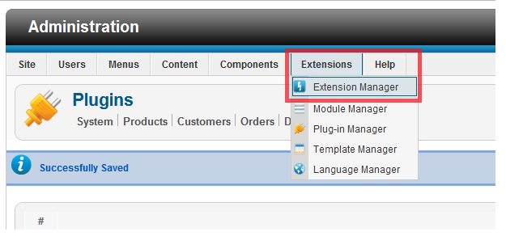
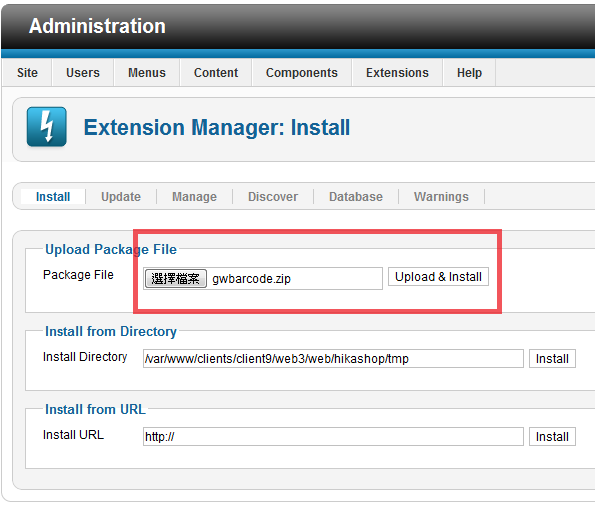
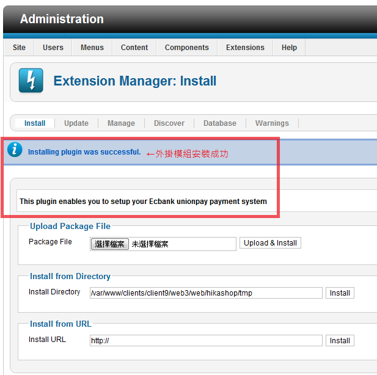
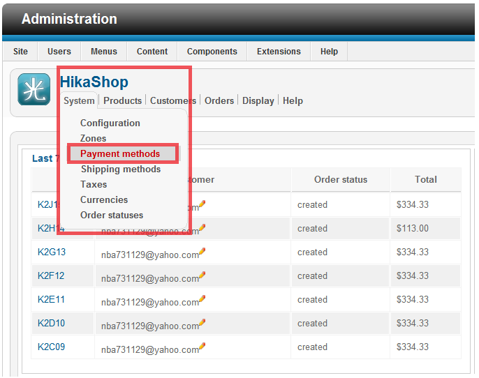
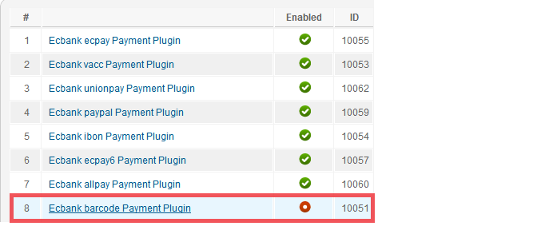
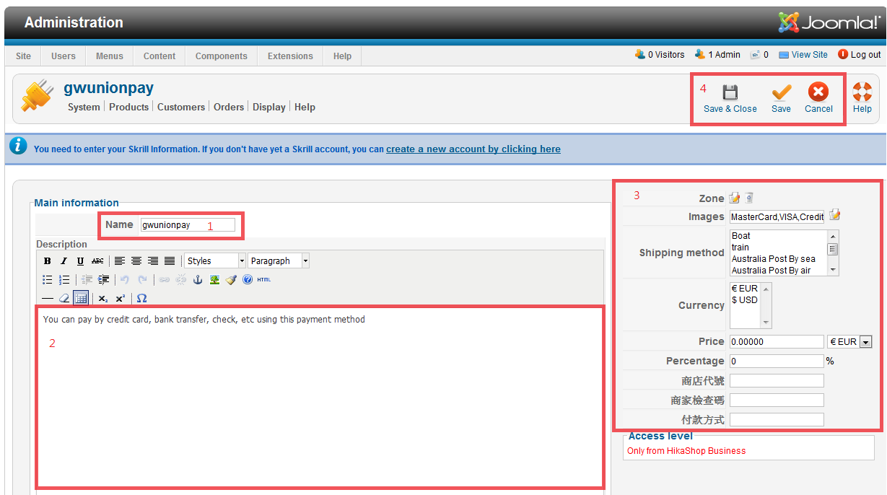

綠界科技線上金流模組安裝教學
Step 1 - 外掛安裝說明
此模組包含的付費模式有：
1. PayPal
2. WebATM
3. 虛擬帳號
4. 超商代碼繳費(萊爾富 & 全家 & OK 便利商店三合一代碼繳費)
5. 7-Eleven iBon超商代碼)
6. 超商條碼繳費
7. ECPAY 線上刷卡
8. 歐付寶(AllPay)線上刷卡
9. 銀聯卡(UnionPay)
10. 支付寶(Alipay)
整合綠界B2C電子發票平台, 可於金流完成後自動開立電子發票
適用平台 Joomla CMS 系統 + Hikashop 購物車平台
請先安裝好Joomla!2.5.x 與 Hikashop Starter 1.5.x(含以上版本)
注意：以下每個步驟皆是必需執行的，請不要忽略某一步驟，以免無法使用，謝謝。
1 請先解壓縮檔案
2 此時您可看見3個資料夾與3個檔案(除了virtuemart資料夾外，其餘皆是教學說明檔)
3 使用管理者帳號登入進入管理後台，在上方的『擴充套件』(Extension)選擇『擴充套件管理』(Extension Management)

4 在『上傳套件包檔案』(Upload Package File)中，選擇電腦中Hikashop資料夾裡的一個付款模組壓縮檔(以barcode為例)，
再按下『上傳 & 安裝』(Upload & Insatall)

5 成功後即會出現以下圖示

6 重複步驟3至步驟5，將您所需要的付款金流模組上傳與安裝
7 請至『元件』(Components)->『HIkashop』設定您的『付款方式』


8 找到剛上傳與安裝的金流模組後，點選右邊的紅色圓點讓他變為綠色來啟動該金流模組

9-1 在name處輸入想要給前台消費者看的付款名稱
9-2 輸入付款名稱敘述
9-3 輸入金流模組的屬性設定值，其中商店代號與商家檢查碼請務必正確輸入，否則此金流模組無法正常運作
9-4 確認資料輸入完畢後按下存檔鍵存檔
